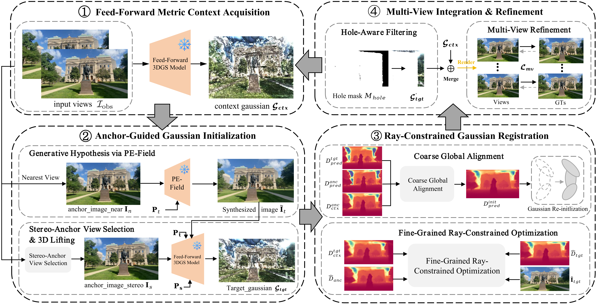
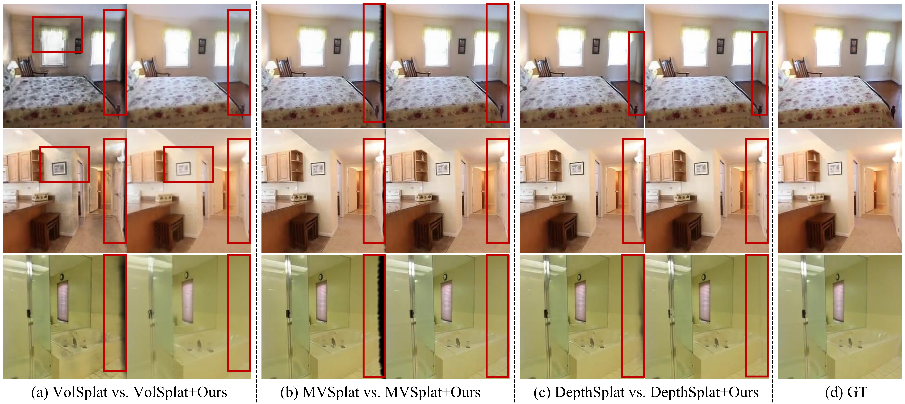

More Re10K Results

3D Gaussian Splatting (3DGS) has revolutionized high-fidelity neural rendering with its explicit representation and efficiency. However, reconstructing scenes from sparse viewpoints suffers from severe geometric voids and floaters due to limited coverage. Current scene completion methods typically rely on an iterative "Repair-then-Distill" paradigm, which is computationally intensive, prone to unstable optimization, and susceptible to overfitting. To address these limitations, we propose GSCompleter, a distillation-free plugin that shifts scene completion to a stable "Generate-then-Register" workflow. Specifically, GSCompleter synthesizes visually plausible 2D reference images and explicitly lifts them into 3D Gaussian primitives with a consistent metric scale via a robust Stereo-Anchor View Selection mechanism. These newly generated primitives are then seamlessly integrated into the global scene using a novel Ray-Constrained Registration strategy. By replacing unstable distillation with rapid geometric registration, GSCompleter exhibits superior 3DGS completion performance across three benchmarks, enhancing both quality and efficiency over various baselines and achieving new state-of-the-art (SOTA) results.
Addressing the geometric holes in the novel view, we adopt a "Generate-then-Register" paradigm to complete the scene via four stages: (1) Feed-Forward Metric Context Initialization: We first reconstruct the observed regions using a scale-aware feed-forward 3DGS model, establishing a foundational context with metric scale; (2) Anchor-Guided Gaussian Initialization: To fill the voids, we generatively synthesize the novel view in 2D space, subsequently employing a Stereo-Anchor View Selection mechanism to pair the view with an optimal stereo anchor view, enabling it to be lifted into 3D Gaussians with accurate depth; (3) Ray-Constrained Gaussian Registration: To align these new primitives, we apply a coarse-to-fine mechanism that first rectifies global drift via RANSAC, followed by a strict 1-DoF ray-space optimization to lock primitives along their camera rays for for local refinement; and (4) Multi-View Gaussian Integration & Refinement: Finally, redundant primitives are pruned, followed by an opacity-only refinement to seamlessly integrate newly generated Gaussians while preventing catastrophic forgetting of the initial scene.

General scene testing on the DL3DV dataset, demonstrating the effectiveness of our method in general scenarios. Our approach effectively fills geometric voids in 3DGS scenes, improving rendering quality and efficiency.
We apply GSCompleter to autonomous driving scenes, where it effectively completes 3DGS scenes and demonstrates the generality of our method.
